GitLab GCP Installation Tutorial
This tutorial is based on how the GCP dashboard looked like on October 2020
Table of content
GitLab GCP Installation Tutorial Table of contentCreate project Creation BillingCreate VMConfigurations Install GitLabConfigure static IPConnect to your newly created VM by SSHUpdate and Upgrade your system Install GitLab Install and configure the necessary dependenciesInstall postfix for email : Add the GitLab package repository and install the packageInstall GitLab Configure GitLab and create an reop Shutdown the server
Create project
Creation
Go to projects by
Menu ->

And click the project dropdown

In the popup, select

Choose a name for your project,
For location, leave it as No organization
and press

Wait until project is created, and make sure you are within the project scope by checking
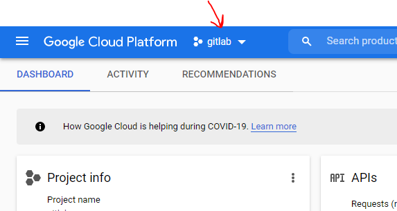
Billing
By default, the class credit billing account would be selected for your project. However, to make sure,
From left side menu, click
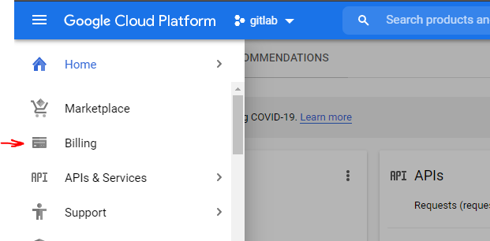
And, make sure that the proper billing account linked to the project:
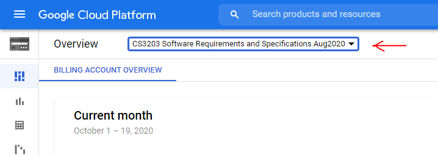
Create VM
From left side menu,
Select
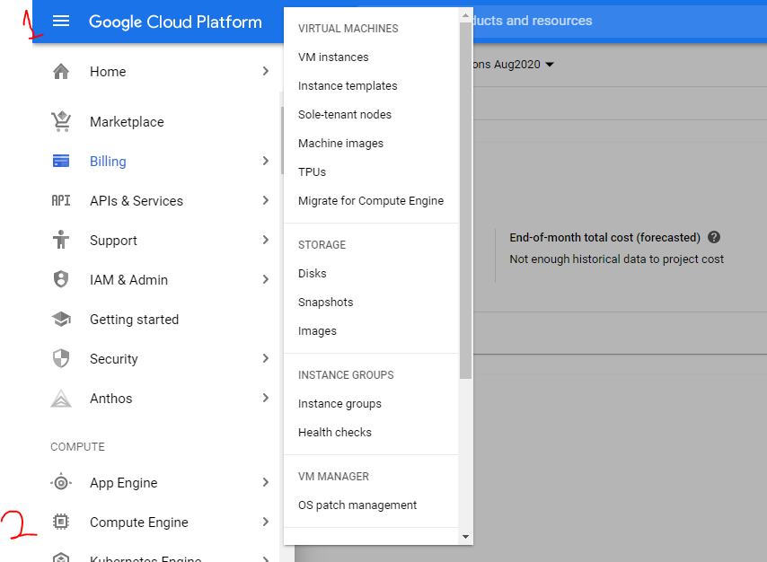
Select to create a new VM:
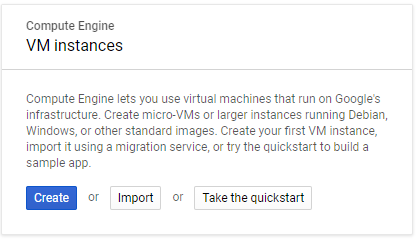
Configurations
1- For the instance Name, choose a proper name, for example gitlab-instance
2- For Machine configuration; make sure to select the following
| configuration | Value |
|---|---|
| Machine family | General Purpose |
| Series | E2 |
| Machine type | e2-medium (2 vCPU, 4 GB memory) |

For the boot disk:
Change it to Ubuntu 20.04 LTS
For this, click the under boot disk:

Select following configurations and click

Under firewall, make sure to have both
Allow HTTP traffic
Allow HTTPS traffic
is selected!
- Not allowing HTTP/HTTPS traffic will prevent access to the gitlab server, or any server! Make sure you have them checked!

Re-check the settings and make sure the proper options are selected.
| configuration | Value |
|---|---|
| name | As you pleased ( gitlab-instance for best) |
| Region/Zone | us-central1(Iowa)/us-central1-a |
| Machine family | General Purpose |
| Series | E2 |
| Machine type | e2-medium (2 vCPU, 4 GB memory) |
| OS | Ubuntu |
| OS version | 20.04 LTS |
| Identity and API access | Allow default access |
| Firewall | ALLOW HTTP and HTTPS |
Then click to create your VM.
Install GitLab
Configure static IP
GCP assigns a dynamic IP to VM by default. This will cases changes the address of GitLab server when ever server shuts down. This case problems for the GitLab installation. To prevent this, we can assign an static IP to the VM.
In order to do that, in the left menu,
Under , select
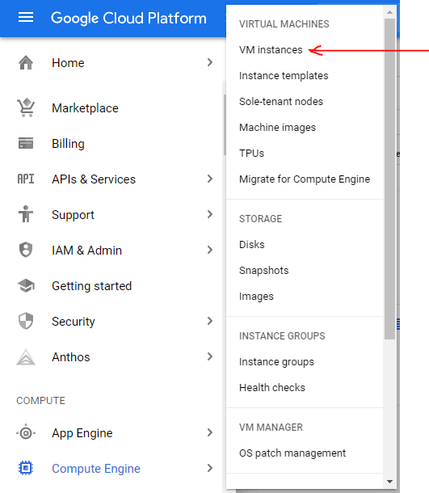
Here, you find the list of your VMs, which at least one them should be your newly created GitLab-instance.
Click on the instance name:

And press
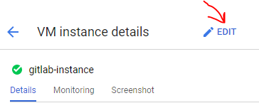
Click to edit Network interfaces
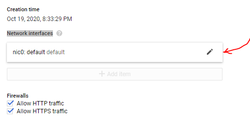
Find External IP option and click the drop box and select Create IP address
In the pop-up, assign a name, select Standard for service tier and click

Click for Network interfaces:

And click on the bottom of page to save configuration.
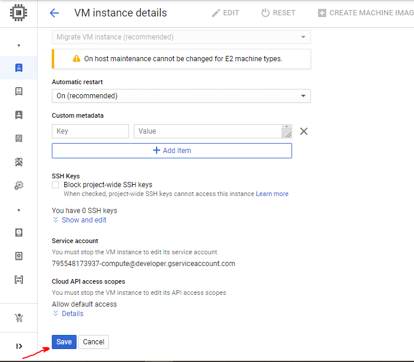
Connect to your newly created VM by SSH
Return back to VM instances page
To connect, click to connect to VM:

A new pop-up window with a shell will appear. Remember you IP address!
Update and Upgrade your system
Type following in the shell:
sudo apt-get update sudo apt-get upgrade -yInstall GitLab
The official instructions also can found here.
Install and configure the necessary dependencies
Type following in the shell:
xxxxxxxxxxsudo apt-get install -y curl openssh-server ca-certificates tzdataInstall postfix for email :
Type following in the shell:
xxxxxxxxxxsudo apt-get install -y postfix
During Postfix installation a configuration screen may appear. Select 'Internet Site' and press enter. Use your server's external DNS for 'mail name' and press enter. If additional screens appear, continue to press enter to accept the defaults.

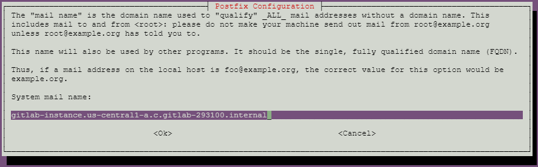
Add the GitLab package repository and install the package
Type following in the shell:
xxxxxxxxxxcurl https://packages.gitlab.com/install/repositories/gitlab/gitlab-ee/script.deb.sh | sudo bash
Install GitLab
Type following in the shell and replace the {your-ip-address} with you IP address which is visible on VM instances row.
xxxxxxxxxxsudo EXTERNAL_URL="https://{your-ip-address}" apt-get install gitlab-eeWait until installation is over. This will take 10 minute or more.
After the installation is done,
Type following in the shell
xxxxxxxxxxsudo gitlab-ctl start now, you can access your GitLab Server using a browser,
Configure GitLab and create an reop
In the VM instances page, click on your instance IP

In a new tab, the GitLab page should appear,
Notice 1: You might face with browser safety alert that the page is not secure, that is because we are using an IP instead of domain in a HTTPS connection, depending on your browser, accept to enter to webpage.
Notice 2: GitLab takes a few minute to configure initially and you might see a error 502 Whoops, GitLab is taking too much time to respond. Wait 5 minutes and refresh the page again until you see the following page

Enter a new password for your root access.
Then in a sign in page, type root as the username and the password you just assigned:
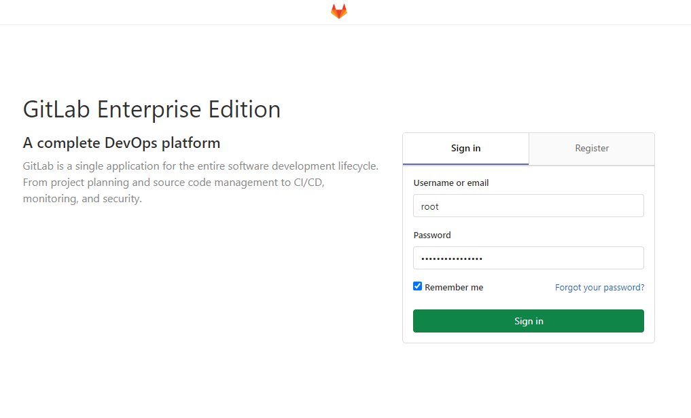
After you logged in, you should see following page:

Congratulations, you just installed GitLab on GCP.
You can create a new Project (same as repository in GitHub) and use it similarly.
Shutdown the server
To minimize the costs and keep your free GCP credit for long time, remember to shutdown your VM when you are not using it. To do that,
Go to VM Instances page, select the VM by checking the check box on its left, and press stop button from top menu.
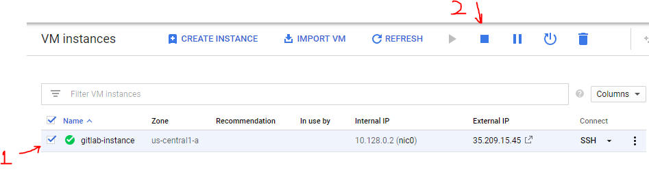
You can restart the VM by pressing the PLAY button.
Note that every time server starts up, it takes some time to load up and you might again see the error 502. Just give it a 5~10 minutes and refresh it.